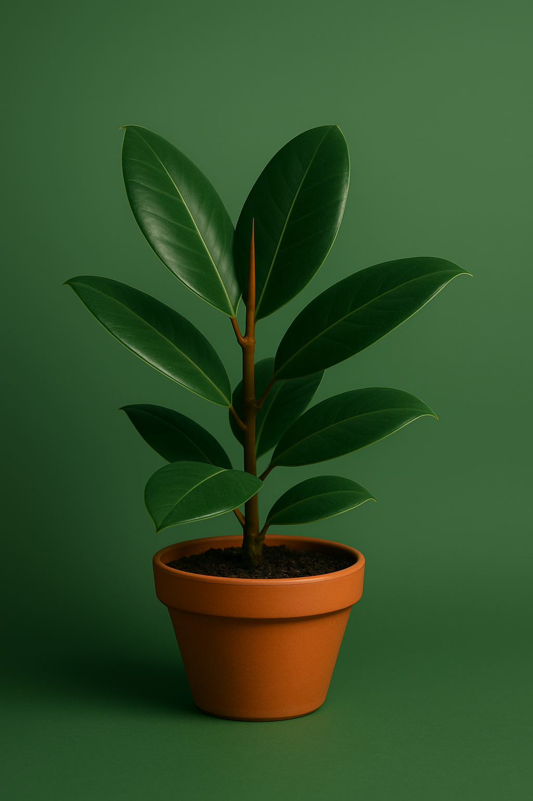

PlantCare Tips to Keep Your Green Friends Happy 🌿
Discover essential tips to help your plants thrive, from watering routines to light love.
Discover essential tips to help your plants thrive, from watering routines to light love.

Check soil moisture before watering. Overwatering is one of the top plant killers!
Understand your plant's light needs – some love the sun, others thrive in shade.
Group plants together or mist them regularly if your home is dry.
Give your plant room to grow by repotting yearly or when roots peek out.
Dust blocks light. Gently wipe leaves with a damp cloth every few weeks.
Use a gentle fertilizer during growing season for that extra boost.
Place your cactus in bright light and water sparingly. Let the soil dry completely between waterings.
Roses need full sun, regular pruning, and deep watering to bloom beautifully and stay healthy.
Ferns love humidity and indirect light. Keep soil consistently moist but not soggy.
Place in a bright spot, prune regularly, and water when the topsoil feels dry to the touch.
Keep a consistent schedule for watering and feeding. Watch for yellowing leaves and adjust care accordingly.
Protect from frost in winter. Water more in summer, less in cooler months. Provide bright but filtered light.
Spring and summer are blooming seasons. Water deeply twice a week and ensure 6+ hours of direct sunlight.
In summer, water once every 2-3 weeks. In winter, reduce watering to once a month. Needs full sun all year.
Needs high humidity year-round. Reduce watering slightly in winter, but never let soil fully dry out.
Adjust watering based on the season – less in winter, more in summer, always checking the soil moisture.
Plants need more sunlight in winter when days are short. Rotate them toward windows for balanced exposure.
Good ventilation helps plants breathe. Keep them spaced out and occasionally open windows for fresh air.